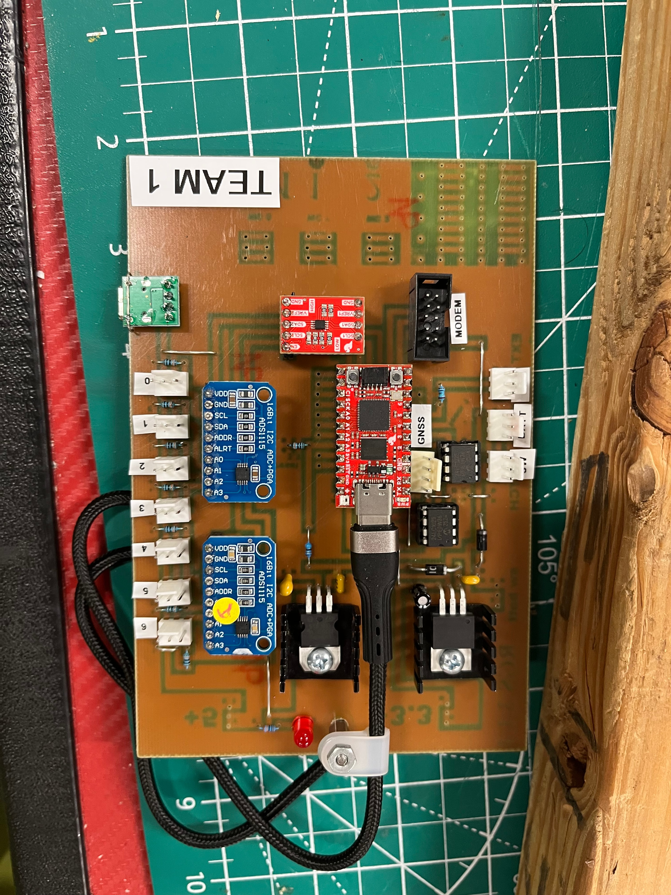
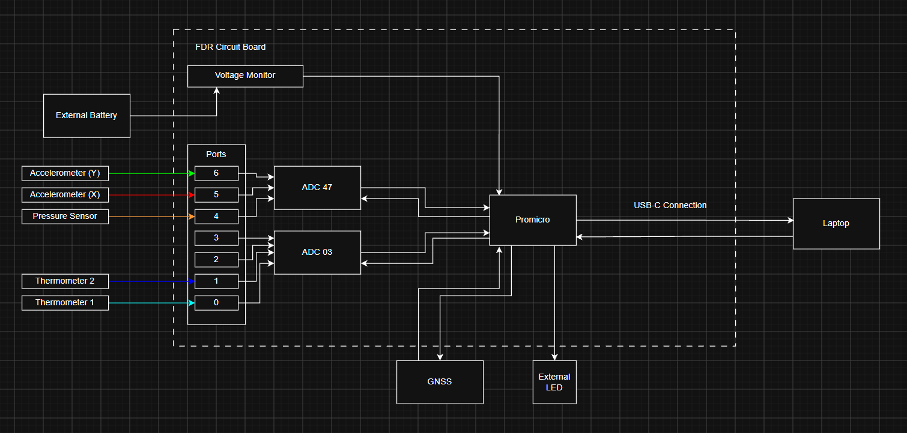

Our Payload
Our Payload
What we built, what it does, and how it works.
Mission
What We're Doing
We're building a small science package that rides a weather balloon up to about 100,000 feet. Along the way, it records temperature, pressure, and acceleration data. After the balloon pops, a parachute brings it back down and we recover it.
Experiment
Our Experiment
Our payload logs temperature, pressure, and acceleration from the ground all the way up through the stratosphere. We'll compare what we measured to a model that predicts what conditions should look like at each altitude.
Hardware
The Hardware
Our payload is built around a Flight Data Recorder (FDR) that collects data from our sensors and stores it in EEPROM memory. Everything fits inside a foam housing designed to protect the components during the flight.
RP2040
Main microcontroller — the brain
ADS1115 ×2
Converts analog sensor signals to digital
GNSS Module
GPS — tracks altitude and position
Temp Sensors (×2)
Inside and outside temperature
Pressure Sensor
Measures air pressure as we climb
Accelerometer
Measures X and Y axis movement
3V & 5V Regulators
Provide stable voltage to all components
EEPROM
Stores all sensor data during the flight

System Design
System Block Diagram
This diagram shows how all the parts of our payload connect together

Components
Sensors & Parts
RP2040 Microcontroller
The brain of the FDR. It has two processor cores and reads data from all the sensors, controls timing, and saves everything to EEPROM memory.
ADS1115 ADC (×2)
These chips convert analog sensor signals into digital numbers the RP2040 can read. We use two of them so we can read multiple sensors at the same time.
Temperature Sensors (×2)
One measures temperature inside the payload, one measures outside. Both are key data points we'll compare against the standard atmospheric model.
Pressure Sensor
Measures air pressure, which drops as you go higher. We use this to track altitude and compare against expected pressure values.
Accelerometer
Measures acceleration along the X and Y axes. This helps us understand how the payload moves and spins during the flight.
GNSS Module
Our GPS. It tracks the balloon's exact position and altitude throughout the flight so we can map the path and see how high we went.
RunCam Camera
Records video during the flight. It receives power from our system but is not connected to the I2C communication lines — it runs independently.
EEPROM Memory
Stores all sensor readings during the flight. After we recover the payload, we read the data from EEPROM and analyze it.
3V and 5V Voltage Regulators
Convert battery voltage to the levels each component needs — 3V for some parts, 5V for others. This keeps the power stable throughout the flight.
Circuit Board (PCB)
We worked on etching and assembling our circuit board. Although we didn't design the original PCB, we gained hands-on experience preparing and working with the board.
Foam Housing
A lightweight foam box that protects the electronics from extreme cold at altitude and cushions the landing after the parachute brings it down.
Data
Data We're Collecting
Predictions
What We Expect to Find
We expect our data to follow the temperature should drop as we climb, then level off. Pressure should decrease the whole way up. Any spots where our data doesn't match the model will be the most interesting things to look at after the flight.